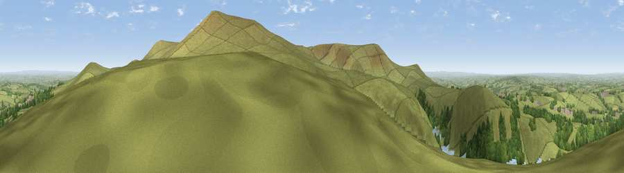

Viewpoint near Sourton
#4080 in England · top 4% of its area beats it · near SourtonThe view, rendered

A 360° render of this exact spot computed from the terrain model, tree cover and land cover — summer colours, afternoon light, calibrated against photographs of famous viewpoints. Real trees, hedges and buildings will differ in detail.
The panorama
Grey silhouette: terrain skyline in each direction (720 bearings, Earth curvature and refraction included). Dashed green: skyline with trees (+15 m) and buildings (+8 m) as obstacles. Blue strip: how far the ground is visible on each bearing.
Where the view opens
Wedge length = distance to the farthest visible ground on that bearing (vegetation-aware). Rings at 10, 25 and 50 km.
What fills the view
67% grassland · 21% woodland · 11% water · 1% cropland ·
Angular shares of the visible panorama (visual magnitude), not map area. Landscape diversity 0.40 (0–1 Shannon).
Key numbers
More beautiful places nearby
The staircase of upgrades: each row has a higher view potential than everything closer. Driving times are estimates from straight-line distance, calibrated against real road routing — check an actual route before setting out.
| Place | Direction | Drive | Score |
|---|---|---|---|
| Yes Tor | ESE · 2 km | ~5 min | 78.5 |
| Viewpoint near North Bovey | ESE · 19 km | ~32 min | 79.3 |
| Viewpoint near Dousland | S · 21 km | ~36 min | 81.0 |
| Shell Top | S · 28 km | ~44 min | 81.8 |
| Viewpoint near Lee Moor | S · 28 km | ~45 min | 82.7 |
| Viewpoint near Kenton | ESE · 37 km | ~56 min | 82.9 |
| Viewpoint near Bucks Mills | NNW · 38 km | ~56 min | 84.0 |
| Viewpoint near Stokeinteignhead | ESE · 42 km | ~61 min | 84.1 |
50.70237, -4.03204 · source: screening · position refined by local search. Computed location — check access rights before visiting.